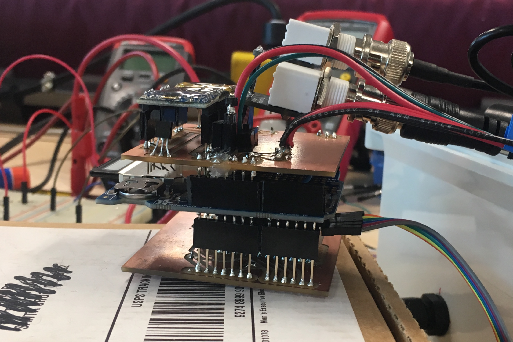

Coding Projects
1. CourseMate Website
Link to site: coursemate.com
Project Overview:
This website is an ongoing project that me and a friend are working on. The goal is to create a site that allows students to find course statistics, reviews, and other resources all in one place.
Web Framework: Django
Languages used: Python, HTML, CSS
Github repository link:
click here
2. RiverNet Sensor Package
Project overview:
This project was completed during my research internship in the summer of 2019.
The premise of the project was to build a sensor package that could be deployed in the local Guadalupe river for a professor in the SCU Environmental Science dpt.
The final product uses the Arduino Pro Mini and SD card shield to write data to a .CSV file. This is connected to sensors that record
temperature. The electrical components are then enclosed in a waterproof container that is disguised as a rock.
language used: C++

Project components:
Software:
- An arduino file (.ino) that writes to an SD card at user-defined intervals (the project required readings to be taken once every hour)
- A sensor interface file (.hpp) that defines virtual functions, common between the different sensors
- A class for each sensor, that includes a readData() function to retrieve data from the sensor.
Design Decisions:
- An Arduino Pro Mini was used instead of a Arduino Uno in order to reduce power consumption
- A sensor interface was implemented in order to make it easier to add more sensors in the future
- A sleep mode function using the SleepyPi2 library was made to take periodic readings
3. This Website!
I made this website as a way to gain a better understanding of web development, and will continue to develop this site as
I become more experienced.
languages used: HTML, CSS, JavaScript